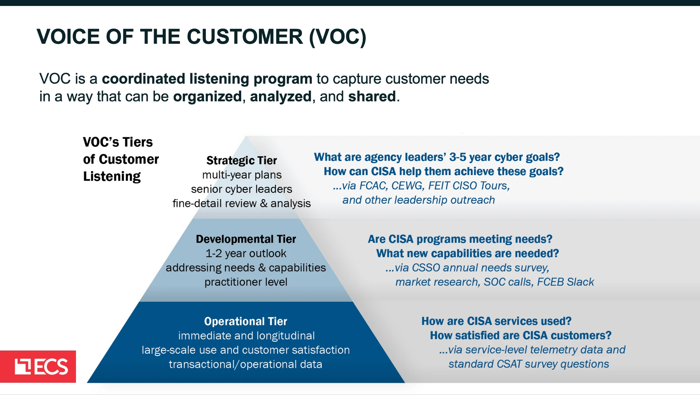
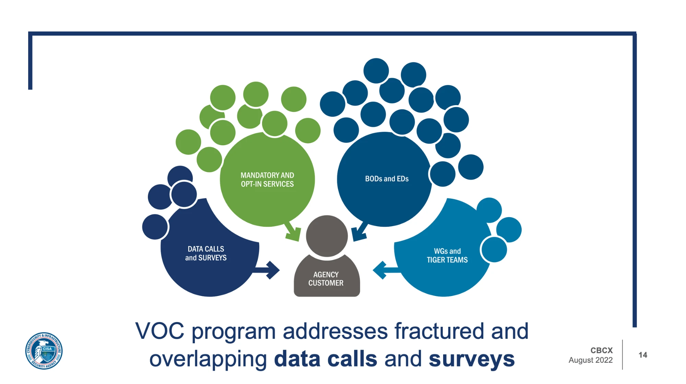
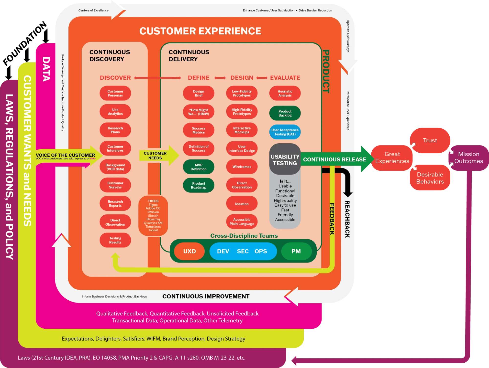

Design Story · CX strategy & research
A Voice-of-Customer program, from zero.
CISA had plenty of customer feedback and no system for hearing it. I built its Voice-of-Customer program from the ground up — interviews, research, and operational data — and turned scattered signals into a repeatable engine that measurably lifted engagement and satisfaction.

The gap
CISA gathered customer feedback — a survey here, a comment box there — but had no program to make sense of it or act on it. Signals were scattered, inconsistent, and rarely closed the loop back to the people who could change something.
Building the program
I stood up the Voice-of-Customer program from zero: stakeholder interviews to learn what actually mattered, best-practices research to set the bar, and analysis of operational and transactional data to keep it grounded in reality rather than opinion.
Making it repeatable
I created a Survey Toolkit — SOPs, a vetted question library, and data standards — so every team collected comparable, high-quality data instead of reinventing it. Refined in workshops with staff and contractors, it was adopted agency-wide.
The strategy
I mapped qualitative satisfaction data against operational telemetry and tied both to user journeys across the whole service-delivery cycle. That CX strategy travelled beyond its first home — adopted across federal and contractor clients.
The outcome
Customer engagement rose as much as 33% and CX scores as much as 19% — and the program’s standards outlived any single survey, giving the agency a durable way to hear and act on its customers.
The problem it consolidates

The CX operating model
